Na seção anterior tratamos de métodos diretos para a resolução de sistemas lineares. Em um método direto (por exemplo, solução via fatoração LU) obtemos uma aproximação da solução depois de realizarmos um número finito de operações (só teremos a solução ao final do processo).
Veremos nessa seção dois métodos iterativos básicos para obter uma aproximação para a solução de um sistema linear. Geralmente em um método iterativo iniciamos com uma aproximação para a solução (que pode ser ruim) e vamos melhorando essa aproximação através de sucessivas iterações.
O método de Jacobi pode ser obtido a partir do sistema linear
Isolando o elemento  da primeira equação temos
da primeira equação temos
 | (4.24) |
Note que utilizaremos os elementos  da iteração
da iteração  (a direita da equação)
para estimar o elemento
(a direita da equação)
para estimar o elemento  da próxima iteração.
da próxima iteração.
Da mesma forma, isolando o elemento  de cada equação
de cada equação  , para todo
, para todo
 podemos construir a iteração
podemos construir a iteração

Em notação mais compacta, o método de Jacobi consiste na iteração

Assim como no método de Jacobi, no método de Gauss-Seidel também isolamos o
elemento  da equação
da equação  . Porém perceba que a equação para
. Porém perceba que a equação para  depende
de
depende
de  na iteração
na iteração  . Intuitivamente podemos pensar em usar
. Intuitivamente podemos pensar em usar  que
acabou de ser calculado e temos
que
acabou de ser calculado e temos
 |
Aplicando esse raciocínio podemos construir o método de Gauss-Seidel como

Em notação mais compacta, o método de Gauss-Seidel consiste na iteração:

Nesta seção, discutimos sobre a análise de convergência de métodos iterativos para solução de sistema lineares. Para tanto, consideramos um sistema linear 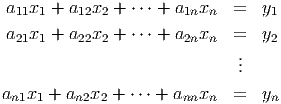, onde 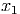 é a matriz (real) dos coeficientes, 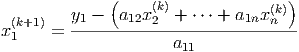 é um vetor dos termos constantes e 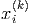 é o vetor incógnita. No decorrer, assumimos que 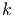 é uma matriz não-singular.
Geralmente, métodos iterativos são construídos como uma iteração de ponto fixo. No caso de um sistema linear, reescreve-se a equação matricial em um problema de ponto fixo equivalente, i.e.:
 |
onde 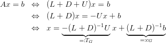 é chamada de matriz da iteração e 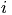 de vetor da iteração. Construídos a matriz 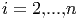 e o vetor 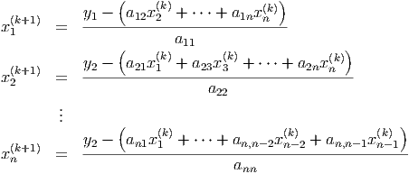, o método iterativo consiste em computar a iteração:
|
|
onde  é uma aproximação inicial dada.
é uma aproximação inicial dada.
Afim de construirmos as matrizes e os vetores de iteração do método de Jacobi e de Gauss-Seidel, decompomos a matriz 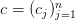 da seguinte forma:
|
|
onde 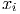 é a matriz diagonal 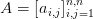, i.e.:
|
|
e, respectivamente, 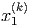 e  são as seguintes matrizes triangular inferior e
superior:
são as seguintes matrizes triangular inferior e
superior:
 |
Exemplo 4.6.3. Considere o seguinte sistema linear:
 , o vetor incógnita 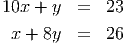 e o vetor dos termos constantes 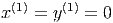. Em
seguida, faça a decomposição 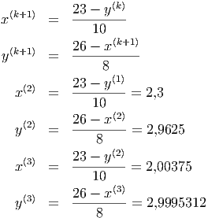.
, o vetor incógnita 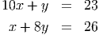 e o vetor dos termos constantes 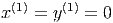. Em
seguida, faça a decomposição 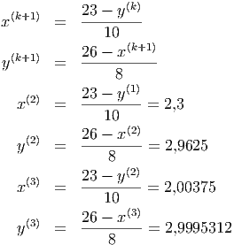.
Solução. A forma matricial deste sistema é 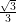, onde:
|
|
A decomposição da matriz 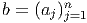 nas matrizes 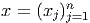 triangular inferior, 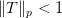 diagonal e
 triangular superior é:
triangular superior é:
 |
No Scilab, podemos construir as matrizes 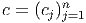, 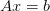 e , da seguinte forma:

Vamos, agora, usar a decomposição discutida acima para construir a matriz de
iteração  e o vetor de iteração 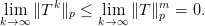 associado ao método de Jacobi. Neste
caso, temos:
e o vetor de iteração 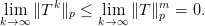 associado ao método de Jacobi. Neste
caso, temos:
|
|
com 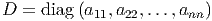 uma aproximação inicial dada, sendo 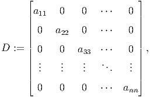 a matriz de iteração e 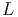 o vetor da iteração.
Exemplo 4.6.4. Construa a matriz de iteração 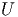 e o vetor de iteração 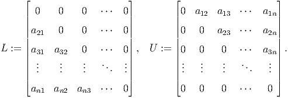 do método de Jacobi para o sistema dado no Exemplo 4.6.3.
Solução. A matriz de iteração é dada por:
 |
O vetor da iteração de Jacobi é:
 |
No Scilab, podemos computar 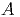 e 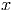 da seguinte forma:
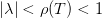
A forma matricial da iteração do método de Gauss-Seidel também pode ser construída com base na decomposição 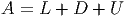. Para tando, fazemos:

|
|
com 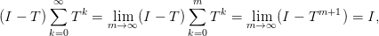 uma aproximação inicial dada, sendo 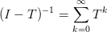 a matriz de iteração e 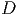 o vetor da iteração.
Exemplo 4.6.5. Construa a matriz de iteração 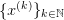 e o vetor de iteração 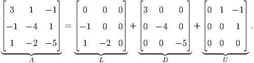 do método de Gauss-Seidel para o sistema dado no Exemplo 4.6.3.
Solução. A matriz de iteração é dada por:
 |
O vetor da iteração de Gauss-Seidel é:
 |
No Scilab, podemos computar 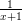 e 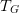 da seguinte forma:
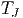
Aqui, vamos discutir condições necessárias e suficientes para a convergência de métodos iterativos. Isto é, dado um sistema 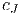 e uma iteração:
|
|
dado, estabelecemos condições nas quais , onde é a solução do sistema dado, i.e. ou, equivalentemente, .
Demonstração. Aqui, fazemos apenas um esboço da demonstração. Para mais detalhes, veja [8], Teorema 4, pág. 14.
Primeiramente, suponhamos que  , . Como (veja [8],
Lema 2, pág. 12):
, . Como (veja [8],
Lema 2, pág. 12):
|
|
temos , o que mostra a implicação.
Agora, suponhamos que e seja . Então, existe tal que (veja [8], Teorema 3, página 12):
|
|
Assim, temos:
|
|
Da equivalência entre as normas segue a recíproca. __
Demonstração. Primeiramente, provamos a existência de . Seja um autovalor de e um autovetor associado, i.e. . Então, . Além disso, temos , logo , o que garante que é não singular. Agora, mostramos que admite a expansão acima. Do Lema 4.6.1 e da Observação 4.6.1 temos:
|
|
o que mostra que . __
Teorema 4.6.1. A sequência recursiva  dada por:
dada por:
 |
converge para solução de para qualquer escolha de se, e
somente se,  .
.
Demonstração. Primeiramente, assumimos que . Observamos que:
|
|
Ora, se é a solução de  , então , i.e.
, então , i.e.
 . Logo, temos demonstrado que converge para a solução de
, para qualquer escolha de .
. Logo, temos demonstrado que converge para a solução de
, para qualquer escolha de .
Agora, suponhamos que converge para solução de  ,
para qualquer escolha de . Seja, então, um vetor arbitrário e
,
para qualquer escolha de . Seja, então, um vetor arbitrário e
 . Observamos que:
. Observamos que:
 , temos, :
, temos, :
|
|
Como é arbitrário, da Observação 4.6.1 temos , . Então, o Lema 4.6.1 garante que . __
Observação 4.6.2. Pode-se mostrar que tais métodos iterativos tem taxa de convergência super linear com:
|
|
Para mais detalhes, veja [8], pág. 61-64.
Exemplo 4.6.6. Mostre que, para qualquer escolha da aproximação inicial, ambos os métodos de Jacobi e Gauss-Seidel são convergentes quando aplicados ao sistema linear dado no Exemplo 4.6.3.
Solução. Do Teorema 4.6.1, vemos que é necessário e suficiente que
e  . Computando estes raios espectrais, obtemos
e . Isto mostra que ambos os métodos serão
convergentes.
. Computando estes raios espectrais, obtemos
e . Isto mostra que ambos os métodos serão
convergentes.
Uma condição suficiente porém não necessária para que os métodos de Gauss-Seidel e Jacobi convirjam é a que a matriz seja estritamente diagonal dominante.
Definição 4.6.2. Uma matriz é diagonal dominante quando
|
|
e para ao menos um , é estritamente maior que a soma dos elementos fora da diagonal.
Teorema 4.6.2. Se a matriz for diagonal dominante8 , então os métodos de Jacobi e Gauss-Seidel serão convergentes independente da escolha inicial .
Se conhecermos a solução exata do problema, podemos calcular o erro relativo em cada iteração como:
|
|
Em geral não temos , entretanto podemos estimar o vetor resíduo . Note que quando o erro tende a zero, o resíduo também tende a zero.
Teorema 4.6.3. O erro relativo e o resíduo estão relacionados como (veja [3])
|
|
onde é o número de condicionamento.
Exemplo 4.6.7. Ambos os métodos de Jacobi e Gauss-Seidel são convergentes para o sistema dado no Exemplo 4.6.3, pois a matriz dos coeficientes deste é uma matriz estritamente diagonal dominante.

 .
. 

 .
.